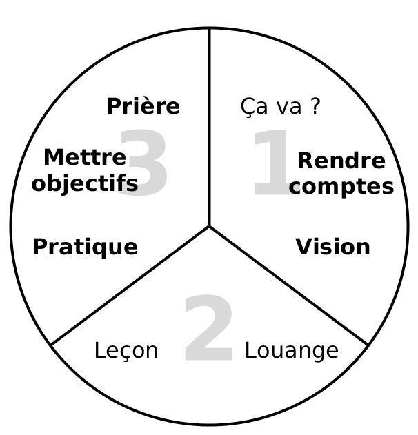

<div style="margin-right:25px;float:left">
<a href="https://www.4training.net/mediawiki/images/9/9c/Le_processus_trois-tiers.png" rel="nofollow"></a></div>
<p><i>Pour plus de détails aux conditions d’utilisation voyez <a class="new" href="/mediawiki/index.php?title=Training_meeting_outline/fr&amp;action=edit&amp;redlink=1">Schéma des parcours de formations</a>.</i>
</p>
<ol><li>Ça va ?</li>
<li><i><b>Rendre des comptes</b></i></li>
<li><i><b>Vision</b></i></li>
<li>Louange</li>
<li>Leçon</li>
<li><i><b>Pratiquer</b></i></li>
<li><i><b>Mettre des objectifs</b></i></li>
<li><i><b>Prière</b></i></li></ol>
<p><br/>
</p><p><br/>
</p>


